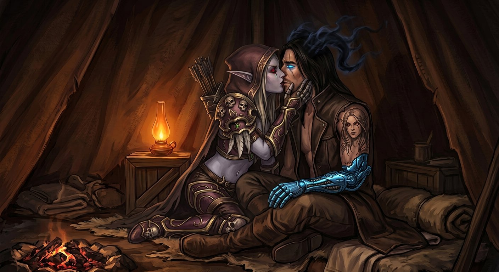

Capítulo Vinte e Três
O que traz de volta
O corredor estava lá de novo.
Mesmas paredes vivas. Mesma luz embutida pulsando como respiração. Mesmos pés andando sozinhos, com a confiança de quem já tinha feito aquele caminho não uma vez, não duas, mas centenas de vezes — e essa era a parte que doía, porque o corpo de Nathan reconhecia cada curva, cada variação na textura do chão, cada ponto em que a luz mudava de tom, e reconhecia com uma intimidade que ele não tinha com nada neste lado do universo.
A sala circular apareceu.
As galerias. Os objetos impossíveis. A espada de luz congelada, o livro que se movia sozinho, o frasco com a tempestade.
E a mesa.
Mas dessa vez a mesa não estava vazia.
✦
Havia alguém deitado no sulco.
Nathan se aproximou. Os pés andaram sozinhos, como sempre, e ele quis gritar para que parassem mas a boca não obedeceu — a boca também era parte daquele corpo que sabia o caminho, e aquele corpo não tinha medo, porque aquele corpo já tinha visto isso antes, já tinha feito isso antes, já tinha sido isso antes.
Ele parou ao lado da mesa.
Olhou para baixo.
E viu a si mesmo.
Não uma cópia. Não um reflexo. Era ele — o rosto dele, o corpo dele, a mesma cicatriz no queixo que ele tinha desde os doze anos, quando caiu de bicicleta na frente da escola. Os mesmos olhos. O mesmo cabelo. Tudo idêntico.
Exceto por uma coisa.
Aquele Nathan na mesa tinha os dois braços.
Os dois braços inteiros, de pele, sem metal, sem prótese, sem nada. E no antebraço direito não havia tatuagem.
Era ele antes de ser ele.
Era o molde.
✦
O Nathan da mesa abriu os olhos.
Eram azuis. Do mesmo azul brilhante que os olhos dele tinham ficado depois da fenda — depois do ano sozinho, depois de tudo mudar. Os mesmos olhos que ele via de manhã no reflexo da prótese e que não lembravam mais o menino de olhos castanhos que tinha caído de bicicleta aos doze anos.
E o Nathan da mesa sorriu — um sorriso que não era sorriso de ninguém que Nathan conhecesse, que não era humano, que era o tipo de expressão que uma coisa usa quando está experimentando um rosto novo — e disse, com uma voz que era a voz dele mas falada do jeito errado:
— Finalmente.
E estendeu a mão.
✦
Nathan acordou.
Não gritando. Pior. Acordou sem ar.
O peito não funcionava. Os pulmões estavam travados, como se alguém tivesse derramado concreto dentro deles, e o coração batia tão rápido que não era mais batimento — era vibração, era um zumbido interno que sacudia as costelas e fazia a visão tremer e transformava o mundo numa mancha cinza e preta que girava e girava.
Ele se levantou. Não decidiu se levantar — o corpo se levantou sozinho, do jeito que um animal se levanta quando sente o cheiro de predador, sem consultar o cérebro. As pernas o levaram para a parede e ele bateu as costas nela e escorregou até o chão e ficou ali, sentado, com as mãos na cabeça e os cotovelos nos joelhos e o ar que não entrava e o coração que não parava.
A prótese brilhava. Violeta intenso, pulsante, como se estivesse respondendo a alguma coisa que ainda estava lá, no fundo, na memória que não tinha acabado de ir embora.
— Nathan.
A voz de Sylvanas. Perto. Muito perto.
— Nathan, olha para mim.
Ele não conseguia. Os olhos estavam fixos num ponto qualquer do chão e não obedeciam, e o peito não abria, e havia uma pressão atrás dos olhos que não era choro mas era prima do choro, e tudo o que ele conseguia pensar era:
Aquele era eu. Aquele era eu antes de mim. E ele me conhecia. E ele estava esperando. E ele sorriu.
— Nathan, respira.
— Não consigo.
A voz saiu num fiapo. Ele não reconheceu a própria voz.
Sylvanas se agachou na frente dele. Ele percebeu pelo movimento, não pelo rosto — ainda não conseguia levantar os olhos. Viu as botas dela. Viu a barra do manto. Viu a mão com o arco pousado no chão, largado, pela segunda vez na história.
— Escuta a minha voz — disse ela. — Você está no abrigo. São quatro da manhã. Varokh está na entrada. Elyra está dormindo. Não tem nada aqui. Não tem nada vindo.
O ar continuava não entrando.
— Eu sei que não tem nada — ele conseguiu. — Não é isso.
— Então o que é?
— Eu me vi.
Silêncio.
— Eu me vi na mesa, Sylvanas. O molde. E ele era eu. Mas não era eu. E ele abriu os olhos. E me conhecia. E sorriu. E estendeu a mão.
A voz estava subindo. Não de volume — de frequência, de velocidade, como se as palavras estivessem se atropelando na saída porque não cabiam todas ao mesmo tempo.
— Ele estava esperando por mim. Ele disse “finalmente.” Com a minha voz. Com o meu rosto. E eu não sei se aquilo era uma memória ou se aquilo está acontecendo agora, lá dentro, atrás daquela porta, e se eu abrir eu vou encontrar aquela coisa usando a minha cara e dizendo “finalmente” de novo e eu não sei se eu vou conseguir dizer não, Sylvanas, porque uma parte de mim quer. Uma parte de mim queria pegar aquela mão. E eu não sei se essa parte é minha ou se é dele.
Ele estava tremendo. O corpo inteiro. Não de frio — de alguma coisa que vinha de dentro, uma vibração que começava no centro do peito e se espalhava para as extremidades e fazia os dedos tremerem e os dentes quase baterem e a prótese brilhar mais forte, violeta, violeta, violeta.
— Nathan.
A voz dela estava mais perto agora. As mãos dela — ele sentiu as mãos dela nos pulsos dele, afastando as mãos da cabeça, segurando firme.
— Olha para mim.
Ele olhou.
Os olhos vermelhos estavam a um palmo dos dele. O rosto de Sylvanas estava completamente parado, como sempre, mas havia alguma coisa nos olhos que ele nunca tinha visto — não era cálculo, não era análise. Era urgência. Contida, controlada, mas urgência.
— Você está aqui — disse ela. — Comigo. Nesta Gorja. Neste abrigo. Com esta mão de metal e este sobretudo e estas asas que nunca ficam paradas o suficiente para eu medir.
— E se eu não sou eu?
— Você é.
— Como você sabe?
— Porque eu conto — disse ela. — Eu conto tudo. E eu contei cada segundo que você esteve perto de mim nesses dois anos e meio, e cada um desses segundos era você, não um molde, não uma ferramenta, não um fabricado. Era você, com a sua teimosia e o seu humor horrível e essa mania de sentar de frente para a porta.
Ele tentou respirar. Não conseguiu.
— Não está funcionando — disse.
— O quê?
— As palavras. Eu estou ouvindo, mas não está funcionando. Eu sei que você está certa. Eu sei. Mas o corpo não para.
O tremor aumentou. A prótese brilhava tanto que iluminava o chão ao redor, e o brilho não era bonito — era um sinal de socorro, era o Vazio dentro dele gritando em resposta a alguma coisa que estava longe e perto ao mesmo tempo.
Sylvanas olhou para ele por dois segundos.
Dois segundos inteiros, em silêncio, com aquele cálculo rápido e preciso que ele conhecia tão bem — mas dessa vez o cálculo não era sobre distância ou ângulo ou probabilidade de sobrevivência.
Era sobre outra coisa.
E então ela largou os pulsos dele.
Levou a mão ao rosto dele — a mão fria, a mão que tinha segurado arcos e flechas e machados e a morte, e que agora segurava o maxilar dele com uma delicadeza que não existia em nenhum outro lugar daquele mundo — e inclinou o rosto dele para cima.
E o beijou.
✦
Não foi cinematográfico. Não foi suave.
Foi firme. Foi preciso. Foi o beijo de alguém que tinha passado dois anos e meio contando segundos e tinha decidido, naquele segundo específico, que contar não era mais suficiente.
A boca dela era fria no primeiro instante — fria do jeito que ela era fria, não de morte, mas de coisa que parou de precisar ser quente. E então, no segundo instante, esquentou. Esquentou de um jeito que não fazia sentido físico, que não tinha explicação em nenhum livro de anatomia de nenhum mundo, porque ela era uma banshee e não devia produzir calor e ainda assim produzia, e o calor subiu pela boca dele e desceu pela garganta e chegou no peito exatamente onde o concreto estava e quebrou.
O ar entrou.
De uma vez, como se alguém tivesse aberto uma comporta, o ar entrou nos pulmões e o peito se expandiu e o coração desacelerou e a vibração parou e o mundo parou de girar e o chão voltou a ser chão e a parede voltou a ser parede e Nathan estava ali, no abrigo, com a mão de Sylvanas no rosto dele e a boca de Sylvanas na boca dele e o calor de Sylvanas dentro dele.
A prótese apagou.

O brilho violeta sumiu como se nunca tivesse existido.
E Nathan ficou ali, imóvel, com os olhos fechados e a respiração voltando e o coração batendo de novo no ritmo certo, e a única coisa que ele conseguia sentir era calor — não da fogueira, que estava quase apagada, não do sobretudo, que não aquecia nada, mas dela. Só dela. Do ponto exato em que a boca dela tocava a dele e do ponto exato em que a mão dela segurava o rosto dele, como se aqueles dois pontos fossem os únicos lugares quentes em toda a Gorja.
✦
Quando ela se afastou, foi só um palmo.
O rosto dela estava exatamente como sempre: perfeitamente parado, sem nenhum sinal do que tinha acabado de acontecer. Mas os olhos vermelhos estavam mais perto do que precisavam estar, e a mão ainda estava no maxilar dele, e ela não fez nenhum movimento de tirar.
Nathan abriu os olhos.
Respirou. Uma vez. Duas. O ar entrava. O peito abria. O mundo estava parado.
— Funcionou — disse, com a voz rouca.
Sylvanas não sorriu. Não era o tipo de pessoa que sorria nessas horas.
— Eu sei — disse.
— Há quanto tempo você queria fazer isso?
Um silêncio.
— Eu não queria — disse ela. — Eu precisava. Tem diferença.
— Qual?
— Querer é escolha. Precisar é constatação. — Ela baixou a mão do rosto dele, mas não se afastou mais. — Eu constatei que as palavras não estavam funcionando. E que eu não ia perder você para uma memória que não é sua. Não depois de trezentos e sessenta e um dias.
Nathan olhou para ela por um tempo longo.
— Você contou os dias.
— Eu conto tudo.
— Até os dias procurando por mim.
— Principalmente esses.
Ele respirou fundo. O ar entrou inteiro, pela primeira vez em não sabia quanto tempo.
— Posso te beijar de volta?
Sylvanas olhou para ele com aquela expressão que ele conhecia tão bem — a expressão de quem está medindo alguma coisa, calculando alguma coisa, e chegando à conclusão de que a coisa medida não cabe em nenhuma categoria conhecida.
— Pode — disse.
E ele a beijou.
Devagar, dessa vez. Sem urgência. Sem pânico. Sem nada além de dois corpos que tinham passado dois anos e meio aprendendo a distância exata um do outro e agora estavam finalmente, completamente, do mesmo lado daquela distância.
A mão dela subiu para a nuca dele, entre o cabelo e a base de um dos chifres — o mesmo lugar onde ela tinha segurado na tenda, na noite do pente — e segurou. Uma vez. Firme.
E a mão de metal dele encontrou a cintura dela e ficou ali, e os dedos se encaixaram no tecido do manto com uma precisão que não era da prótese, que nunca tinha sido da prótese, que era dele e sempre tinha sido dele.
✦
Na entrada do abrigo, Varokh olhou para dentro por meio segundo.
Viu duas figuras muito próximas, uma com a mão no rosto da outra, e a fogueira quase apagada, e a prótese sem brilho, e o silêncio.
Virou-se de volta para a escuridão.
— Elyra — sussurrou.
— Hm?
— Ele vai dormir.
Elyra abriu um olho.
— Como você sabe?
— A mão dele parou de tremer.
Elyra ficou quieta por um tempo.
— Você viu os olhos dela?
— Vi.
— Eu nunca tinha visto aquilo.
— Eu também não.
Uma pausa longa.
— Fica de vigia?
— Sempre fico.
— Eu sei. Só quis ouvir.
Varokh não respondeu. Mas ficou — como sempre ficava — olhando para a Gorja lá fora com a paciência de quem já tinha guardado o sono de muita gente, e que agora guardava, pela primeira vez, o de alguém que finalmente tinha parado de tremer.